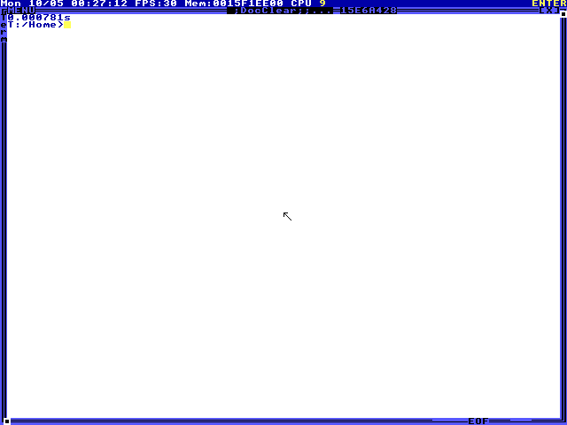

TempleOSBench
Computer use in a ring 0 operating system.
An agent sees the screen, types HolyC, and controls the mouse. This repository provides a QEMU harness, six starter tasks, and the recordings from one Cua agent run.
- Guest
- TempleOS 5.03
- Display
- 640 × 480
- Agent interface
- Screenshots, keyboard, mouse
- Execution
- QEMU · no guest network
Starter tasks
01–06Select a task to inspect its prompt and recording.
| Task | Operation | Turns | Time | Visual check |
|---|---|---|---|---|
| Loading recorded tasks… | ||||
Task 01
Arithmetic

Loading recording…
Agent input at this step
Loading recording…
Prompt
Loading task prompt…
Result
Loading recorded result…
The grader checks visible text. It does not verify the program’s implementation or hidden guest state.
Recorded run
Results JSON- Model
- —
- Agent
- —
- Visual checks
- —
- Attempts
- One per task
Each task starts from the same VM snapshot. Cua’s ComputerAgent drives a TempleOS computer adapter; the harness enforces the recorded time and turn limits.
This is one starter run, not an estimate of model success rates. The screenshots and executed inputs are available for inspection.
Run it locally
TempleOS compiles HolyC at the command line. All guest code runs at ring 0 in a shared address space.
The harness handles VM resets, input, screenshots, and grading. The six starter tasks exercise the shell and filesystem.
Requires Python 3.11+, QEMU, and a provider API key. See the repository for setup and provider options.
Source and setup instructionspip install -e '.[cua]'
temple-cua fetch-iso
temple-cua prepare --output assets/baseline.qcow2
temple-cua run --provider cua \
--model openai/gpt-6.1-sol \
--baseline assets/baseline.qcow2 \
--task arithmetic --output runs/arithmetic